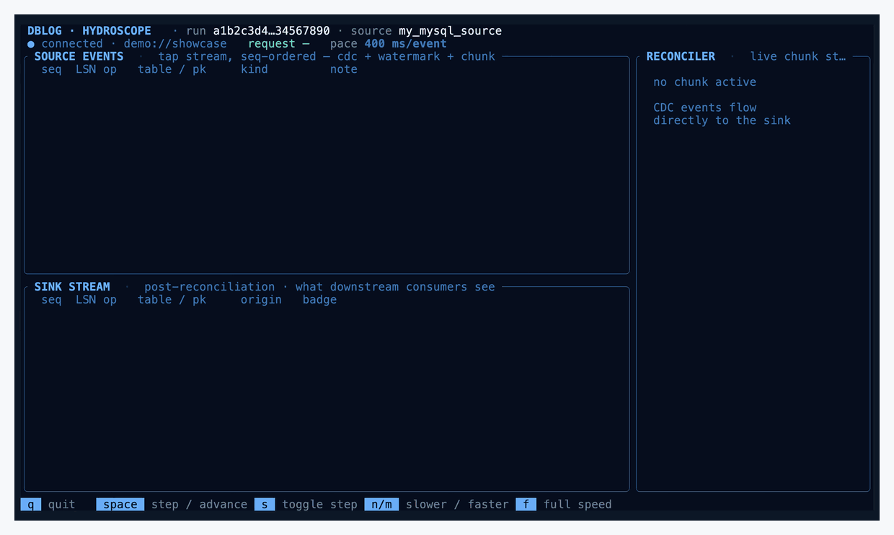
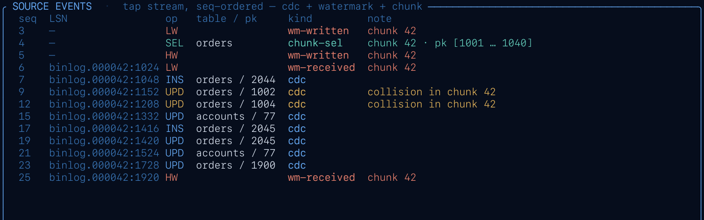
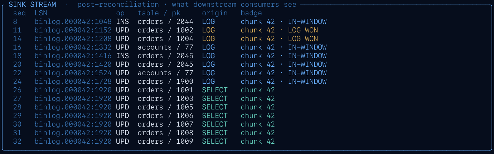
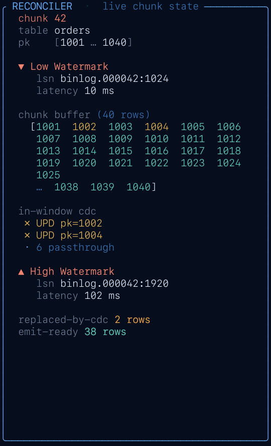

DBLog tap TUI — a live, watermark-level view of chunked CDC reconciliation.

~12 seconds of --scenario showcase at 120 ms/event.
DBLog bootstraps a consistent copy of a table with a snapshot that takes rows in small chunks, interleaved with the live CDC stream. Each chunk is bracketed by a pair of watermarks — LW (low watermark) and HW (high watermark) — written to and read back from the log itself. Any log event that arrives between LW and HW touching a pk the chunk selected wins over the snapshot: the log version is newer, the snapshot row is dropped from the refresh emit.
Hydroscope is a read-only observer that attaches to DBLog's educational
tap endpoint (GET /api/v1/tap/stream) and shows the
algorithm from the outside: every source-log event on the top-left,
every post-reconciliation sink event on the bottom-left, and the
live state of the active chunk's reconciler on the right.
cd ops/tap-tui cargo build --release --bin hydroscope
Output: target/release/hydroscope. A single binary, no runtime dependencies beyond libc.
Three built-in scenarios replay scripted event streams without touching a database. Same wire format as the live tap, so the UI rendering path is identical:
target/release/hydroscope --scenario showcase # infinite, rich target/release/hydroscope --scenario chunk42 # finite, 1 chunk, teaching target/release/hydroscope --scenario chunk42-standby # chunk42 + standby pair target/release/hydroscope --demo # alias for chunk42
See Scenarios below for what each one walks through.
Omit --scenario / --demo and hydroscope
connects to the DBLog tap:
target/release/hydroscope # default: 127.0.0.1:8085
target/release/hydroscope --url http://host:port/api/v1/tap/stream
Requires the tap to be enabled in the DBLog runtime — see
docs/OPERATION.md § 5.1.2 and
docs/CONTROL_PLANE.md § 5.4 in the main repo.
503 tap_not_enabled surfaces as a clear disconnect banner
with reconnect backoff. Run-id changes (process restart on the DBLog
side) reset UI state.
| Flag | Default | Effect |
|---|---|---|
--scenario <name> |
— | chunk42, chunk42-standby, showcase |
--demo |
off | Shorthand for --scenario chunk42 |
--slowdown <ms> |
100 (showcase) · 350 (chunk42) · 0 (live) | Sleep N ms between events. Higher = slower. Adjustable at runtime with n / m. |
--step |
off | Start in step mode — one event per space. |
--url <URL> |
http://127.0.0.1:8085/api/v1/tap/stream |
Live mode tap endpoint. |
| Key | Effect |
|---|---|
| q · Esc · Ctrl+C | Quit |
| space | In step mode, advance one event; otherwise enter step mode. |
| s | Toggle step mode |
| n | Slow down by 100 ms |
| m | Speed up by 100 ms (clamped to 0) |
| f | Full speed (delay = 0) |
Pace state is surfaced in the banner: full, N ms/event, or STEP (space=next).
The screen is split 72% / 28% horizontally. Left column stacks SOURCE LOG (top) and SINK STREAM (bottom); right column is the RECONCILER sidebar. Six distinct areas, each shown below at its actual rendered size so you can read the content:
Brand marker on the left, then run <id> (first 13
chars of the DBLog run UUID), source_id, and uptime
t+HH:MM:SS.mmm. The rightmost cell (clipped in this
narrow capture) is the window state label:
OPEN LW received, HW pending ·
CLOSING HW received, chunk not yet completed ·
SELECTED chunk selected but LW still pending ·
— no chunk active.
Priority order: standby > error > disconnect >
connection state. When healthy, shows ● connected,
queue fill (queue N/M (P%)), the latest
request's id + scope + state, and current pace.
⚠ STANDBY and ✗ ERROR / ⚠ DISCONNECTED are the attention states — DISCONNECTED also shows uptime so you know how long we've been retrying.

Every tap event in the order it arrived. Columns:
seq, t (relative to first event),
LSN, kind, op,
table / pk, note.
Event kinds: cdc, wm-written,
wm-received, chunk-sel,
chunk-drop, chunk-done. Colour maps to
semantics below.
checkpoint.advanced events are producer-side bookkeeping
— the TUI accepts them on the wire but intentionally drops them, so
the source log stays focused on what drives the reconciler.
Strictly wire-derived — no cross-referencing between event streams.
A collision surfaces as its own chunk-drop row on
arrival.

What downstream consumers see after reconciliation. Columns:
seq, t, LSN, op,
table, pk, origin,
badge.
LOG = CDC passthrough ·
SELECT = snapshot refresh row
emitted on HW. Badge surfaces the in-window chunk id
for LOG rows that landed inside a watermark window; it's empty
otherwise (including for SELECT rows — the origin already says
"snapshot refresh", and the active dump id is on the reconciler
sidebar).

Live state of the active chunk only. Flows top-to-bottom in algorithm time-order:
pk [lo … hi] — chunk's pk rangereq / dump — request + dump identity▼ LW — low-watermark token, LSN, latencyin-window cdc — collisions listed (up to 3), passthrough countchunk buffer — pk range visualisation, excluded pks crossed outexcluded (log won) — up to 6 excluded pks one-per-line△ HW — high-watermark token, LSN, latencyemit-ready — refresh row count waiting on HWafter / final / fpFixed-width sidebar — doesn't collapse or resize when the chunk lifecycle advances, so the source/sink panels stay visually anchored.
Keyboard shortcuts cheatsheet. See Runtime keys for the full reference.
Colours carry consistent meaning across panels:
| BLUE | flowing / complete / healthy — CDC events, connected, LW received, HW on closed chunk |
| YELLOW | anomaly / pending — collision triggers, HW pending, standby, excluded pk |
| CYAN | process state — sink origin=SELECT, request lifecycle |
| RED | hard signal — LW marker, error, disconnected banner |
| gray / dim | chrome and orientation — labels, placeholders, "no data yet" |
| Scenario | Shape | What it exercises |
|---|---|---|
chunk42 |
Finite (~65 events) | Single chunk, 2 collisions, 38 refresh rows. The algorithm's "hello world". |
chunk42-standby |
Finite | chunk42 plus a stream.standby / stream.resumed pair at the tail — exercises the backpressure banner. |
showcase |
Infinite | Scripted intro (4 chunks with increasing contention, standby interlude, final-chunk + request COMPLETED, non-fatal error), then procedural continuous traffic until quit. |
TABLE, app.orders) → ACTIVEstream.standby + stream.resumed (backpressure interlude)final_chunk=trueCOMPLETEDerror event (WatermarkSequenceException, non-fatal)After the intro, the continuous loop emits deterministic (xorshift-seeded) random traffic — plain CDC bursts, chunks of 10–30 rows with 0–5 collisions each, heartbeats, checkpoints, occasional standby pairs and non-fatal errors — until you quit.
--scenario chunk42 to see a full
chunk lifecycle start-to-finish, then run --scenario showcase
to see the pattern repeat at scale.
Hydroscope is designed around a ~120-column wide terminal. On narrower windows, the source-log and sink-stream tables drop rightmost columns first (kind, note, badge). The reconciler sidebar holds its content but tokens (UUIDs) and LSNs may clip mid-string.
tap_not_enabled
Live mode landing on a DBLog runtime whose tap is disabled. Enable
dblog.tap.enabled=true in application.properties
and restart. Disconnect banner retries automatically with backoff.
Defaults: 100 ms/event for showcase,
350 ms/event for chunk42 (slow enough to
read), 0 for live. Override with --slowdown <ms>
at launch or n / m / f at runtime.